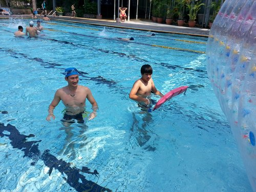
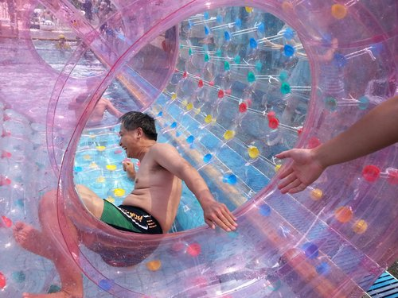
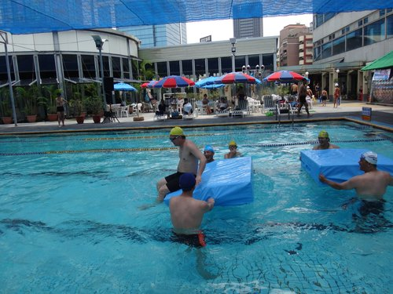
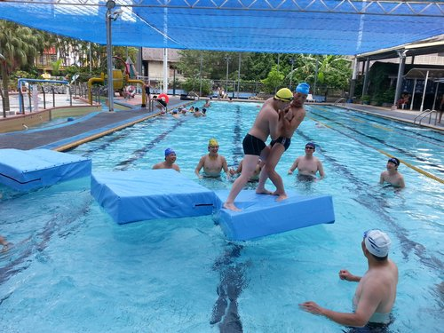
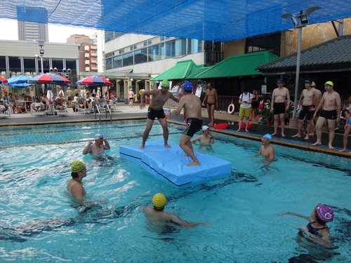
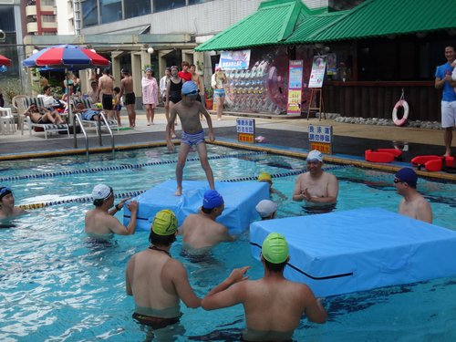

滾滾樂、游泳接力、騎浮標競速、水上平台競技.......
人魚親水派對....將使武林英雄榜重新洗牌...
本報訊：2013/7/21 上午9時許，南和池畔紛紛湧入各路英雄好漢…據聞這裡將有一場人魚親子大會師～～
主辦單位與場地經理，積極秘商...要如何減輕這場派對即將掀起的武林大地震......... 就是在滾球中，從泳池的這頭滾到對岸再回來(全長35M)......可別以為這很簡單 正式比賽前，選手們紛紛假試玩之名，行嚇阻之實， 彷彿是用生命在搏鬥…… 至於其他對手是否因而受到心理壓力……殊難謂其毫無影響之可能啊……＠＃＄％^^ 於是， 滾滾球就緒 目標就緒 啦啦隊就緒

 滾滾樂～
滾滾樂～
試玩結束～主辦單位依大家認真之程度，決定半個泳池即可
工作團隊就緒

小朋友&遊戲區也安頓就緒～～
比賽正式開始囉～～
每個人都不顧形象、全力以赴，真是異常地熱血啊～
到站了～連站起身都顯得困難重重～
大家都在出發時滾滾樂～
在回程時...........被滾滾樂
不論夫妻檔、青年檔.... 連鍾家各虎父虎子也跌到七葷八素.....  有時連把拔也險些招架不住.... 相較於其他彪形大漢組的聯手，更有看頭！ 小法堅信...與姨丈聯手一定可以再造佳績...... 不信？還有以下圖片為證～～
體型瘦小的小法果然聰明才智高人一等，只見細細的長手長腳...機伶的配合者球柱體的前滾動作…...與把拔協力向前...
抵達時，終於不支～
看～跟把拔還是最好吧

真的是把拔、馬迷最棒了
其實......
最精彩的是這一組。
出發不久，彤彤一直喊：停一下...停一下
到底怎麼回事？
看過下圖就知道了！！
到底是人滾球、還是球滾人？
原來當一個蒼鼠真的沒有想像中的簡單
MAMY、DADY～我再也不敢小看蒼鼠了
成績揭曉：（前六名）
第一名 代昌父子 58秒
第二名 柏宏父女 60秒
第三名 炎榮(大小冬瓜) 64秒
第四名 大仁哥父子 65秒
第五名 哈士奇&姨丈 66秒
第六名 亮文母子 70秒
大家想必很好奇...彤彤究竟花了多少時間..........144秒
所帶來的快樂指數...............................................無限～
游泳接力～
分為親子人魚＆菁英人魚接力
親子人魚......溫馨&真情流露.....
每一次的交手，都是熱誠&同心
大仁哥的跳水，一直獨占鰲頭
剛學游泳的麗珠姐～不錯吧
乖寶寶不怕不怕～～～～把拔一定陪著你
大會成績揭曉： (名字依棒次排序)
第一名：孟彤、大仁哥、宗揚、振智、哈士奇、宣撫 3’50
第二名：震哥、張鏡、貞秀子、黃醫師、麗珠、長憲(錦祥子) 3’51
第三名：小法、炎榮子、炎榮、宗霖、柏宏、宗霖子 4’00 第四名：錦祥、世璋、貞秀女、貞秀、代昌子、代昌 5’11
3～2～1～開始！！
真是要命的緊張又刺激～～
連成績也是......
第一組 2’54”55
第二組 2’54”46
天啊～不到1秒的勝負！....短期內武林恐難有安寧之日啊！
騎浮標～
選手必須騎乘魚雷浮標，分為兩組接力～（也為日月潭泳渡作準備）
因大部分的人魚在前兩場耗盡了體力，此時活動主軸當然是小人魚.....
由於速度實在快不了.....
～最後是悠閒的FEEL～～
水上平台競技～
又分為個人跳板&兩人角力
個人跳板～
人魚必須安全前往最後一片平台，且維持不落水...
有各式各樣的跳水姿勢....
以及入水姿勢....

大家看到小揚哥上場，平台自動拉遠.......最糟的是...
平台終究還是不給面子.....叫超鐵人情何以堪....
彤彤又說了.......再近一點啦～再近一點啦.......
小人魚的表現似乎遠遠超越大人魚
在哥哥姐姐陪伴下，小小人魚也完成了使命...
兩人角力～
2人分別站在兩個平台上，其中1人將另1人推入水中，即屬獲勝。

這是一個考驗人性的遊戲...
有父子與父女對壘...


好友及兄妹競賽....

親子派對結束了～
在熱鬧的南和池畔，河東人魚寫下了不朽的傳奇
每隻人魚都說....真好玩，我還要 ～～～^^
～～～^^
主辦單位都聽到了.....新的人魚浪潮.....正在醞釀中...